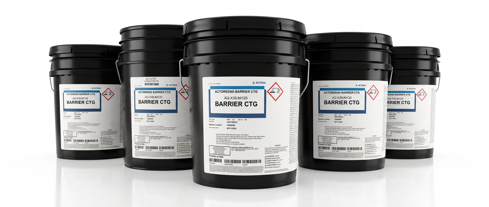
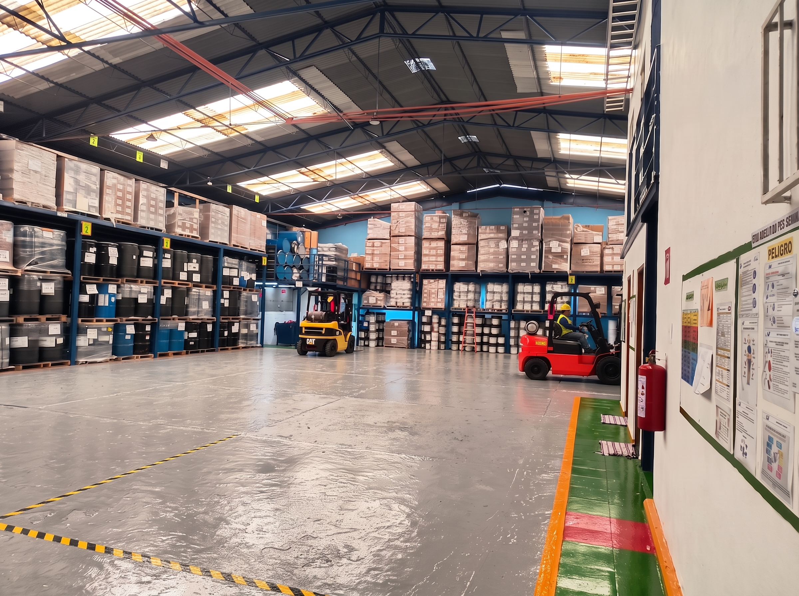
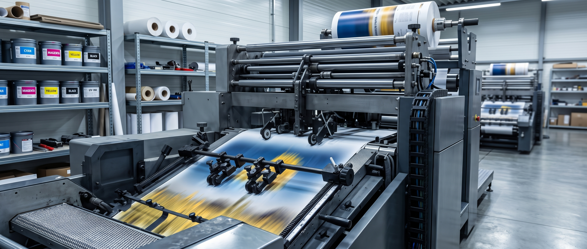

ACABADO ESPEJO • ALTO IMPACTO
GLOSSCOAT 2 - RVG000116
Barniz de altísima transparencia y nivelación que realza el contraste de color e intensifica el brillo óptico en catálogos y cartones laminados.
Formulaciones acuosas sostenibles de alto rendimiento, bajo contenido de VOC y excelente brillo y protección, diseñadas para responder a los estándares más exigentes de la industria gráfica y de empaque alimentario.

Formulaciones acuosas de alto impacto óptico, secado ultra veloz y excelente nivelación diseñadas para realzar el contraste y brillo en empaques comerciales y revistas.
Barniz de altísima transparencia y nivelación que realza el contraste de color e intensifica el brillo óptico en catálogos y cartones laminados.

Formulaciones resistentes a rayaduras, abrasión y manipulación frecuente en líneas de empacado continuo y transporte comercial.

Recubrimiento de secado acelerado y excelente transferencia en anilox para tirajes continuos de alta productividad.
Los barnices matte de ACTEGA® han sido diseñados tecnológicamente para modificar sustancialmente la reflexión de luz sobre sustratos de papel, cartón y películas flexibles.


Soluciones de recubrimiento funcional formuladas para procesos que demandan termosellado, barrera antigrasa, adhesión sobre sustratos térmicos y máxima durabilidad.

Barniz termosellable de alta resistencia diseñado para empaques blíster sobre cartón, garantizando un sellado hermético y seguro.

Formulación acuosa con propiedades de barrera a grasas, aceites y humedad, apta para empaques secundarios de alimentos.
Optimizado para absorción rápida y anclaje superior en papeles absorbentes, liners y cartulinas.

Formulación para papeles térmicos directos y etiquetas resistentes al calor y fricción de cabezal.

Recubrimiento de ultra adherencia sobre películas metalizadas y sustratos sintéticos de difícil anclaje.